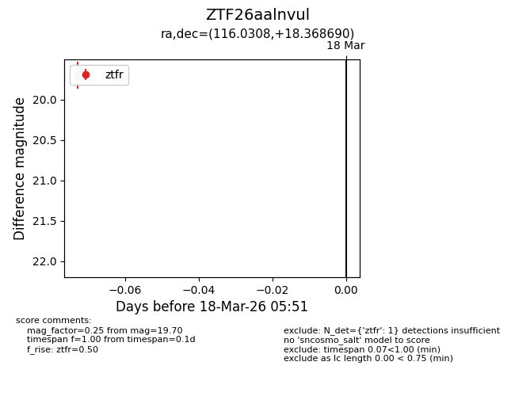
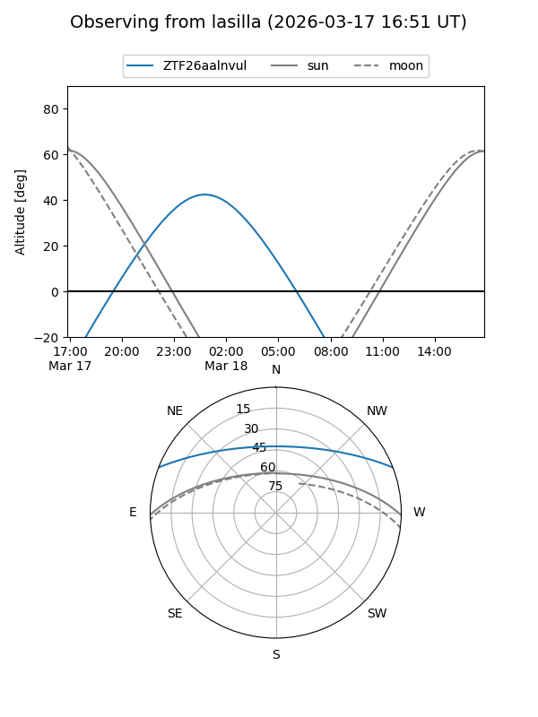
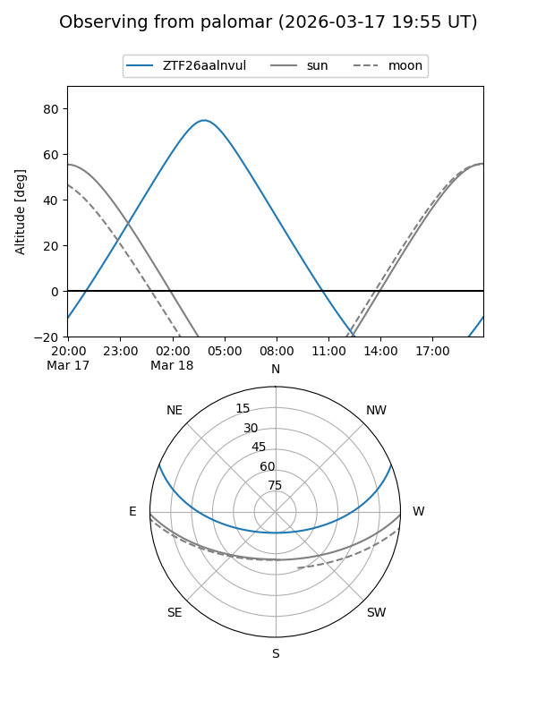

ZTF26aalnvul
Target ZTF26aalnvul at 2026-03-18 05:53
Aliases and brokers:
FINK: link
Lasair: link
ALeRCE: link
alt names
ZTF26aalnvul (ztf,fink_ztf)
Coordinates:
equatorial (ra, dec) = 116.0308,+18.36869
equatorial (HMS+DMS) = 07:44:07.40,+18:22:07.28
galactic (l, b) = (201.7987,+19.64295)
Flags:
Photometry:
last ztfr=19.70
1 ztfr detections
Lightcurve

Visibility


Additional plots